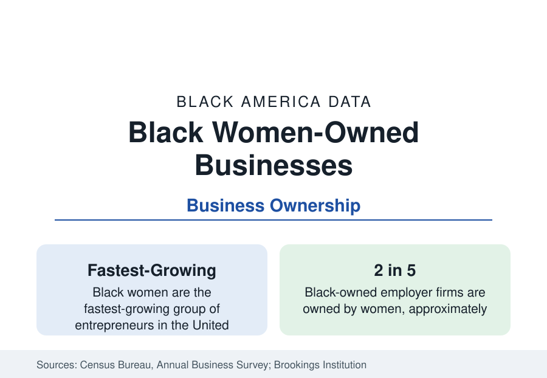

Black Business
Black Women-Owned Businesses: The Fastest-Growing Founders
Black women start businesses at the fastest pace of any major demographic — roughly two in five Black-owned firms — against the steepest capital odds in the data.

Black women are the fastest-growing group of entrepreneurs in the United States — the consistent finding of analyses of Census Bureau business data across the past decade — and they own roughly two in five of all Black-owned firms. Their businesses concentrate in health care and social assistance, personal services, professional services, and retail; they start with less capital than any comparable founder group; and their firms' average receipts are the lowest of any major owner demographic, a gap that tracks access to capital more closely than it tracks effort or demand. This article reports the ownership data.
The Growth Record
The Census-based growth studies describe a surge with few parallels. In the years before the pandemic, the number of Black women-owned firms grew at multiples of the overall rate of business formation; the pandemic-era application surge of the business-formation data was again led disproportionately by Black women founders, in the analyses of the new-business statistics. The drivers the literature identifies are the ones the employment data predict: a highly credentialed population — Black women hold the majority of Black America's degrees — facing the wage and promotion arithmetic recorded in the workforce profile, and converting credentials into ownership in the sectors they know professionally: health, care, education services, beauty and wellness, and business services.
Sector and Scale
The Annual Business Survey's sector table for Black women-owned employer firms mirrors the overall Black business distribution with a stronger tilt: health care and social assistance is the largest sector by a wide margin, followed by professional and technical services, retail, accommodation and food services, and the personal-services industries where Black women's consumer brands have built national followings. Scale is the constraint in every table: the large majority of Black women-owned firms are nonemployer or micro-employer businesses, average receipts run at a fraction of the all-firm figure, and the count of Black women-owned firms above the million-dollar revenue line, while growing, remains small relative to the founder base — the profile of a population starting many businesses and capitalizing few of them at scale.
Capital: The Binding Constraint
The Federal Reserve's Small Business Credit Survey supplies the mechanism. Black women applicants report the data's most difficult financing profile: the highest rates of discouragement (not applying because denial is expected), the highest denial rates among those who apply, the greatest reliance on personal savings and personal credit, and the smallest average loan sizes. The wealth data explain the starting position: founders typically capitalize businesses from household assets, and the median Black woman's household net worth — the census section's wealth tables by demographic — is the thinnest collateral base in the economy. The result is a founder population that self-finances, starts smaller, and grows from revenue, which the receipts data then record as underperformance. Read correctly, the causal arrow runs from capital to scale, and the entrepreneurship rate itself — the highest growth in the nation — is the anomaly demanding explanation, not the receipts.
The Institutional Response
The growth has built an institutional layer: Black-women-focused venture funds and angel networks, accelerator programs, supplier-diversity pipelines at major corporations for which Black women-owned firms are a priority category, and lending initiatives at community development financial institutions whose portfolios overweight exactly this founder profile. The data tracked in this reference — application rates, approval rates, average funded amounts in the credit surveys — are the scoreboard on which those institutions' effect will appear, with the early readings showing movement in formation and survival rather than, yet, in scale.
Reading the Founder Data
Survival and the Next Data
Business survival data add the final measure. Black women-owned firms close at elevated rates in their first years in the longitudinal business data — the expected arithmetic of thin capitalization, since undercapitalized firms of every ownership fail faster — but surviving firms' growth rates converge toward the broader population's, which is the survival literature's consistent finding and the quantitative case that the constraint is the starting line rather than the running. The pandemic-era cohort of Black women founders is now entering the age range where the survival tables will judge the institutional response described above.
Black women-owned business is the business section's growth story and its capital story in the same table: the fastest founder formation in America emerging from the population with the least household capital, concentrated in the care and service economy its founders know from the inside. The figures to watch are not the startup counts — those are established — but the capitalization and scale series beneath them, where the outcome of the current institutional build-out will be decided.
More in Black Business
Black-Owned Businesses: Counts, Receipts, and the Representation Gap
About 161,000 Black-owned employer firms and three million solo ventures: how the Census Bureau counts Black business ownership, where firms concentrate, and the gap between population share and business share.
Black Median Net Worth: The Wealth Gap in Federal Reserve Data
The Federal Reserve puts Black median family net worth at $44,900, against $285,000 for White families — about 16 cents on the dollar. The widest gap in economic data.
Black Buying Power: The $1.8 Trillion Consumer Economy
Black buying power is estimated at about $1.8 trillion — larger than the economy of most nations. What the figure measures, who produces it, and what it buys.
Source: U.S. Census Bureau, Annual Business Survey; Brookings Institution analyses of Census data; Federal Reserve Small Business Credit Survey.